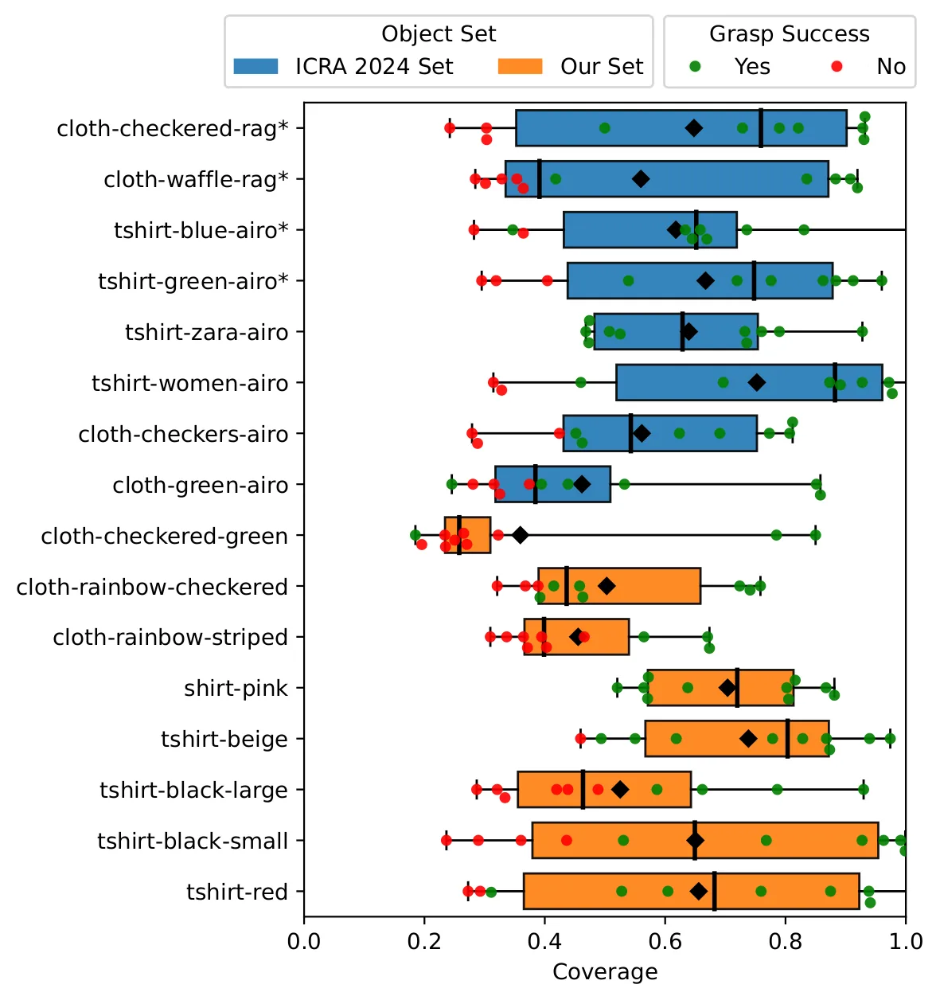
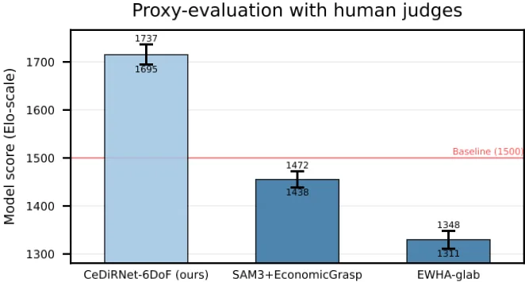
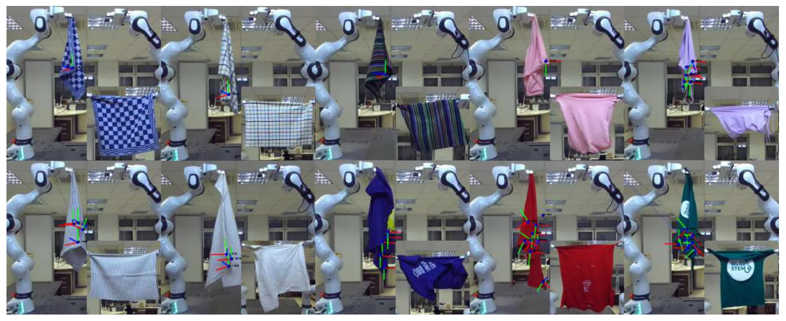

O problema: tecidos são difíceis de manipular
Manipular objetos rígidos com robôs é relativamente previsível: você empurra uma caixa e ela se move de forma calculável. Tecidos são outra história. Eles têm infinitos graus de liberdade, dinâmica não-linear, dobras que ocluem pontos críticos e aparência que muda radicalmente conforme a configuração. Tarefas como dobrar ou desdobrar roupas permanecem desafiadoras justamente por isso.
Uma estratégia promissora para desdobrar tecidos é a regrasping-in-the-air: um braço robótico segura o tecido suspenso enquanto o outro escolhe um ponto ótimo para agarrar e esticar. A competição ICRA 2024 Cloth Competition padronizou essa tarefa como benchmark, criando um ambiente para comparar métodos. O desafio central é: dado um tecido pendurado, onde e como o segundo braço deve agarrá-lo para maximizar a área desdobrada?
Abordagens anteriores frequentemente dependem de heurísticas artesanais ou preveem apenas a localização 2D do ponto de preensão, deixando a orientação da pinça para planejamento posterior. Isso funciona mal quando a geometria 3D do tecido importa. O que falta é um método que preveja diretamente a pose completa de preensão — posição e orientação em seis graus de liberdade (6-DoF) — a partir de uma única imagem RGB.
A ideia: regressão densa de pose 6-DoF com CeDiRNet
Os autores propõem CeDiRNet-6DoF, uma extensão de uma arquitetura anterior chamada CeDiRNet que detectava pontos 2D usando regressão densa de vetores de direção. A ideia original era simples: para cada pixel da imagem, a rede prevê um vetor que aponta para o centro do objeto de interesse. Onde esses vetores convergem, ali está o ponto. Essa formulação evita problemas de detecção baseada em caixas delimitadoras e funciona bem para múltiplos pontos na mesma imagem.
CeDiRNet-6DoF mantém essa base mas adiciona três cabeças de regressão paralelas, uma para cada componente de rotação (roll, pitch, yaw). Cada cabeça prevê um par seno-cosseno para o ângulo de Euler correspondente. Essa parametrização trigonométrica elimina descontinuidades em 2π e mapeia valores de ângulo ilimitados para o intervalo [-1, 1], facilitando o aprendizado. A rede também prevê uma máscara de segmentação do tecido e a distância logarítmica até o ponto de preensão mais próximo.
A entrada é uma imagem RGB do tecido pendurado. A saída é um conjunto de campos densos: direções para os pontos de preensão, três pares seno-cosseno para orientação, segmentação e distância. Um segundo estágio, chamado LocNet, extrai máximos locais nos campos de direção para localizar candidatos de preensão. Para cada candidato, a rede lê os valores de orientação naquele pixel e recupera os ângulos de Euler via atan2(sin, cos). A profundidade vem de uma câmera RGB-D, completando a pose 6-DoF.

Como funciona: da imagem à pose de preensão
O pipeline começa com a captura de uma imagem RGB-D do tecido pendurado. A rede densa (DenseRegNet) processa essa imagem e gera seis mapas: dois para direções de centro (Csin, Ccos), seis para orientação (três pares Dsin/Dcos, um por eixo), um para segmentação (S) e um para distância logarítmica (R). Cada pixel carrega informação sobre o ponto de preensão mais próximo projetado naquele pixel.
A segunda etapa usa LocNet para identificar máximos locais nos campos de direção, produzindo um mapa de probabilidade de localização. Cada máximo local corresponde a um candidato de preensão. Como a regressão é densa, a rede pode prever múltiplos pontos na mesma imagem — útil quando há várias opções de preensão viáveis.
Para cada candidato, o sistema lê os valores de Dsin e Dcos naquele pixel e aplica atan2 elemento a elemento para recuperar os três ângulos de Euler (θx, θy, θz). A posição 2D do pixel é combinada com a profundidade da câmera para obter a posição 3D (X ∈ ℝ³). Juntos, posição e orientação formam a pose 6-DoF completa. Essa pose é então filtrada por viabilidade cinemática: o planejador verifica se o braço robótico consegue alcançar aquela configuração sem colisões. Se múltiplos candidatos são viáveis, o sistema escolhe o de maior confiança.
Treinamento: dados reais, sintéticos e fine-tuning
O treinamento ocorre em duas fases. Primeiro, pré-treinamento no ViCoS Towel Dataset, que contém 8.000 imagens reais e 12.000 sintéticas de toalhas sobre uma mesa, anotadas com segmentação, cantos e orientação 1D. Os autores estenderam esse dataset com anotações 6-DoF para preensão de desdobramento, gerando cerca de 5.000 imagens reais adicionais. Esse pré-treinamento ensina a rede a reconhecer geometria de tecidos e pontos de preensão em configurações variadas.
A segunda fase é fine-tuning no dataset da competição ICRA 2024, fornecido pelos organizadores. Esse conjunto tem aproximadamente 500 imagens de tecidos pendurados no ar, anotadas com poses de preensão que maximizam a área desdobrada. As anotações foram feitas manualmente: um anotador humano escolhia o melhor ponto de preensão e a orientação da pinça para cada configuração. Esse dataset é menor mas específico para a tarefa de regrasping-in-the-air.
A função de perda combina múltiplos termos: perda de regressão para os campos de direção e orientação, perda de segmentação (cross-entropy), e perda de distância logarítmica. A perda de segmentação atua como supervisão auxiliar, encorajando a rede a aprender features compartilhadas úteis para ambas as tarefas. Embora a máscara de segmentação não seja usada em inferência, sua presença no treinamento melhora o desempenho — um efeito de regularização observado em estudos anteriores.
Integração robótica: da previsão ao movimento
Prever a pose é apenas metade do problema; executá-la com robôs reais exige planejamento de movimento e controle. O sistema usa dois robôs Franka FR3 de 7 graus de liberdade, posicionados a 90 cm de distância, replicando a configuração da competição ICRA 2024 (que usava UR5e de 6 graus). Uma câmera Zed2i RGB-D estéreo passiva captura a cena de trás dos robôs, com leve inclinação para baixo.
O pipeline completo segue quatro etapas: (i) o braço direito pega o tecido pelo ponto mais alto e o levanta; (ii) o braço esquerdo pega o ponto mais baixo do tecido pendurado, formando a configuração inicial; (iii) CeDiRNet-6DoF prevê a pose de preensão ótima para o braço direito; (iv) ambos os braços esticam o tecido no ar. A etapa crítica é a (iii), onde a rede deve escolher um ponto que maximize a área desdobrada.
Para executar a preensão, o sistema usa cinemática inversa analítica para calcular ângulos das juntas que atingem a pose prevista. Um planejador RRT-Connect gera uma trajetória livre de colisões até essa configuração. Se a pose não é cinemáticamente viável (fora do alcance ou em colisão), o sistema tenta o próximo candidato da lista. Durante o estiramento final, sensores de força nos motores detectam quando o tecido está totalmente tensionado, parando o movimento para evitar rasgar o material.
Avaliação: competição ICRA 2024 e itens novos
Os autores avaliaram o método em dois conjuntos: os oito itens oficiais da competição ICRA 2024 (quatro toalhas, quatro camisetas) e oito itens novos coletados por eles (quatro toalhas, quatro camisetas), totalizando 16 peças. Cada item foi testado dez vezes, gerando 160 execuções. A métrica principal é cobertura de área: a razão entre a área do tecido desdobrado pelo robô e a área de referência obtida manualmente em configuração ótima.
Nos itens da competição (vistos no treinamento), CeDiRNet-6DoF alcançou 93,0% de cobertura média e 95,0% de taxa de sucesso de preensão. Nos itens novos (não vistos), a cobertura caiu para 78,5% e o sucesso de preensão para 70,0%. Combinando ambos os conjuntos, a cobertura média foi 85,8% e o sucesso de preensão 82,5%. Esses números mostram generalização razoável mas não perfeita para tecidos não vistos.
A taxa de sucesso de preensão mede se o robô conseguiu agarrar o tecido na posição prevista sem deixá-lo cair. Falhas ocorreram principalmente em tecidos com texturas muito diferentes das do treinamento (como uma toalha verde quadriculada) ou quando a previsão de orientação estava incorreta, fazendo a pinça errar o ponto. Quando a preensão teve sucesso, a cobertura foi geralmente alta, indicando que o método escolhe bons pontos quando funciona.

Comparação com métodos relacionados
Os autores compararam CeDiRNet-6DoF com dois baselines reproduzíveis da literatura: EconomicGrasp e um método de detecção de cantos seguido por heurística. EconomicGrasp prevê objectness, graspness, ângulo e profundidade densamente a partir de nuvens de pontos, uma formulação diferente mas também baseada em regressão densa. O método de cantos detecta os quatro cantos do tecido e escolhe o mais distante do ponto já segurado.
Como não havia código público dos métodos vencedores da competição ICRA 2024, os autores conduziram uma avaliação proxy com juízes humanos. Mostraram vídeos de execuções dos três métodos (CeDiRNet-6DoF, EconomicGrasp, cantos) e pediram que juízes escolhessem qual desdobrou melhor. Usando um modelo hierárquico Bayesiano Bradley-Terry, calcularam pontuações tipo ELO. CeDiRNet-6DoF obteve a maior pontuação, com intervalo de credibilidade de 95% não sobrepondo os outros métodos.
Na competição real ICRA 2024, CeDiRNet-6DoF ficou em segundo lugar entre dez participantes. O método vencedor não está descrito em publicação acessível, dificultando comparação direta. Os autores reportam que seu método superou nove competidores e ficou próximo do primeiro colocado, estabelecendo CeDiRNet-6DoF como estado da arte reproduzível para essa tarefa.

Ablação: o que realmente importa no design
Um estudo de ablação detalhado investigou cinco componentes do método: (1) segmentação auxiliar durante treinamento, (2) uso de profundidade como entrada, (3) randomização de fundo, (4) recorte da imagem baseado na posição do robô, e (5) comparação entre orientação 3D (6-DoF) e 1D (3-DoF). Cada experimento removeu ou alterou um componente, medindo impacto na cobertura e sucesso de preensão.
A segmentação auxiliar melhorou a cobertura em 1,9 pontos percentuais (pp) e o sucesso de preensão em 5,0 pp. Embora a máscara não seja usada em inferência, sua perda durante treinamento regulariza as features compartilhadas, ajudando a rede a focar no tecido. Surpreendentemente, adicionar profundidade como entrada não melhorou o desempenho — possivelmente porque o dataset de fine-tuning é pequeno (~500 imagens) e a rede com 88 milhões de parâmetros pode ter sobreajustado no canal de profundidade.
Randomização de fundo (substituir o fundo por imagens aleatórias durante treinamento) trouxe ganho de 5,6 pp em cobertura e 10,0 pp em sucesso de preensão, forçando a rede a ignorar contexto irrelevante. Recortar a imagem ao redor do tecido, baseado na posição conhecida do robô, deu ganho de 9,7 pp em cobertura e 23,2 pp em sucesso, removendo distrações e focando a rede na região relevante. Finalmente, usar orientação 3D (três ângulos de Euler) em vez de 1D melhorou a cobertura em 6,4 pp e o sucesso em 15,0 pp, validando a necessidade de pose completa 6-DoF.

Limitações e o que fica em aberto
Apesar dos resultados sólidos, o método tem limitações claras. A generalização para itens não vistos é imperfeita: cobertura caiu 14,5 pp e sucesso de preensão 25 pp em tecidos novos. Texturas muito diferentes (como a toalha quadriculada verde) confundem a rede, sugerindo que o dataset de treinamento não cobre suficientemente o espaço de aparências. Camisetas novas tiveram desempenho melhor que toalhas novas, possivelmente porque variação em camisetas foi limitada a logos centrais, enquanto toalhas tinham texturas radicalmente diferentes.
O método foi avaliado apenas em toalhas e camisetas. Outras categorias de roupas (calças, vestidos, roupas de cama) permanecem não testadas. A estratégia de regrasping-in-the-air funciona bem para peças relativamente simples, mas roupas complexas com mangas, bolsos ou múltiplas camadas podem exigir abordagens diferentes. Além disso, o sistema assume que o tecido está inicialmente pendurado de forma razoável; configurações muito emaranhadas podem falhar.
A dependência de anotações humanas para poses ótimas limita a escalabilidade. Anotar 6-DoF manualmente é trabalhoso e subjetivo: diferentes anotadores podem escolher pontos ligeiramente diferentes. Métodos de aprendizado por reforço ou auto-supervisionados poderiam descobrir estratégias de preensão sem supervisão manual, mas introduzem outros desafios (simulação realista, transferência sim-to-real). Finalmente, o método não lida com falhas de preensão de forma robusta: se todos os candidatos falham, o sistema não tem estratégia de recuperação.
Por que isso importa
Manipulação robótica de tecidos é um problema fundamental com aplicações práticas em automação doméstica, lavanderias industriais, hospitais (troca de lençóis) e manufatura têxtil. A dificuldade técnica — alta dimensionalidade, dinâmica complexa, oclusões — torna esses ambientes um banco de prova para percepção e controle robótico. Resolver desdobramento é um passo necessário antes de tarefas mais complexas como dobrar ou vestir.
CeDiRNet-6DoF avança o estado da arte ao prever diretamente pose completa 6-DoF de forma densa, evitando heurísticas frágeis ou planejamento em duas etapas. A formulação de regressão densa com vetores de direção é elegante e gera múltiplos candidatos naturalmente, útil quando restrições cinemáticas eliminam algumas opções. A validação em competição real e em itens novos fornece evidência de que o método funciona fora de laboratório controlado.
Os resultados também destacam desafios abertos: generalização para aparências novas, necessidade de mais dados de treinamento, e o papel ainda incerto da informação de profundidade em redes grandes. O estudo de ablação é particularmente valioso, mostrando que ganhos vêm de detalhes (recorte de imagem, randomização de fundo) tanto quanto de arquitetura. Para pesquisadores em robótica de manipulação, o paper oferece um método reproduzível e lições práticas sobre o que funciona — e o que ainda precisa melhorar — em percepção para tecidos deformáveis.
O que fica
- CeDiRNet-6DoF prevê pose completa de preensão (posição e orientação 6-DoF) para desdobrar tecidos pendurados, usando regressão densa de vetores de direção e ângulos de Euler parametrizados com seno-cosseno.
- Em avaliação com 16 itens (8 da competição ICRA 2024, 8 novos), o método alcançou 85,8% de cobertura média e 82,5% de sucesso de preensão, ficando em segundo lugar na competição entre dez participantes.
- Ablação mostra que recorte de imagem (+9,7 pp cobertura), randomização de fundo (+5,6 pp) e orientação 3D vs. 1D (+6,4 pp) são cruciais; profundidade como entrada não ajudou, possivelmente por dataset pequeno.
- Generalização para texturas não vistas cai 14,5 pp em cobertura, indicando que diversidade de treinamento ainda limita robustez do método em ambientes reais não controlados.
Paper original: Vision-Based 6-DoF Grasp Pose Estimation for Robot Cloth Unfolding
Comentários
Nenhum comentário ainda. Seja o primeiro.